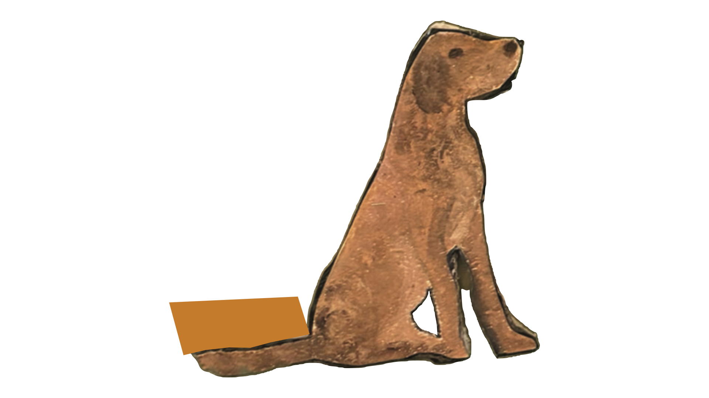

This is your chance to become a published author/artist!
Submit your works to Briars and Ivy today!

Registration closes mid-April ->
(Click the Dog) volume_up
Volume LXII | 2024 Visit Page ->
Art in its purest form, draws from the human experience. The human experience of
our high school artists and writers represents the culmination of growth. Every piece of art,
from poem to photograph to painting, comes from a teenager who is either growing up too fast
or not fast enough. In this magazine, we attempt to capture the essence of growth. It is a fickle
thing: something that disintegrates before our eyes and slips through our fingers when we hold
it too tight. We gain an intimate insight into the influence of childhood worldliness, memories
that are representative of our aspirations and a burgeoning growth that remains ubiquitous
throughout time. It is the unprecedented, inevitable thing that makes the human experience.
We, the staff of Briars and Ivy, hope that you can connect with our experiences, no matter
where you are on your own journey.